Слева — дерево по реальному меню кабинета: разверните пункт стрелкой, чтобы увидеть его вкладки, и нажмите любой узел — справа появится описание. Раздел «Описание дашбордов» разбирает каждую цифру: что это, как считается и откуда берётся.
💡
Что такое Кора. Память компании: система слушает встречи, читает чаты и документы, сама собирает граф знаний и помнит за всю команду — даже когда кто-то уходит. Дашборды показывают пульс компании по этим данным, заполнять вручную ничего не нужно.
Как устроено меню (версия 2.0)
Меню зависит от роли. Руководители (владелец, администратор, операционный директор) видят «Ритмы» (Сегодня · Аналитика · Неделя · Итоги месяца) и сводки по всей компании. Рядовой сотрудник вместо «Ритмов» видит группу «Моё» (его «Сегодня» = личное пространство, «Мои дела», «Чек-ин») и пункт «Спросить».
👥
Полное меню владельца — на скриншоте в начале раздела «Меню кабинета». Кому виден каждый пункт — указано в его статье.
Реальное меню кабинета (роль владельца) — источник дерева слева.Меню кабинета
Сегодня
Главный экран при входе для руководителя — пульс компании за 30 секунд: что случилось, что требует решения, куда движемся. Когда всё в норме — экран «молчит».
Владелец, администратор
📊
Это дашборд (сводный экран). Поячеечный разбор каждой цифры — в разделе Дашборды → Сегодня.
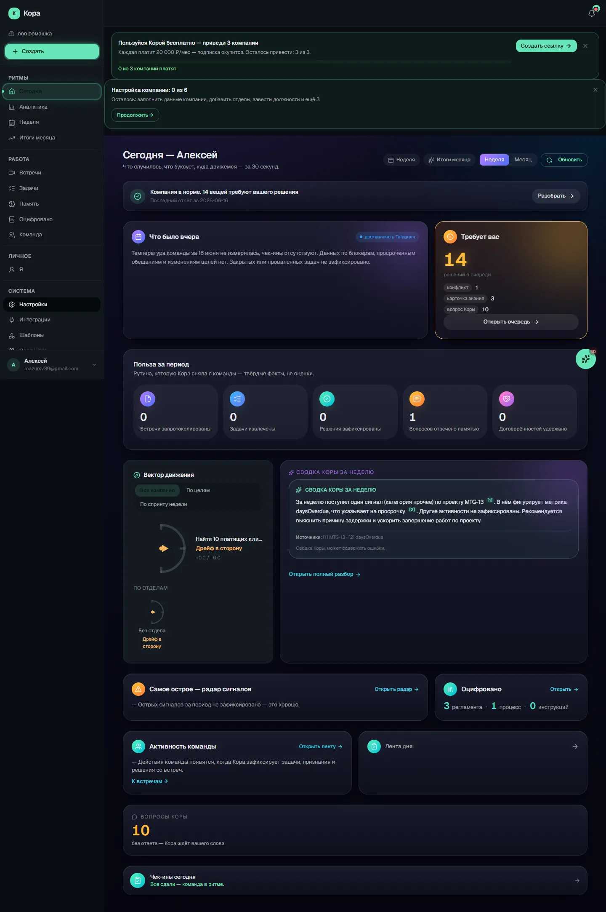
СегодняМеню кабинета
Аналитика
Отдельная доска для разбора: риски, перегруз людей, узкие места, доведение решений, клиенты под отток. Открываете, когда нужно копнуть глубже — главную она не перегружает.
Владелец, администратор, операционный директор
📊
Это дашборд (сводный экран). Поячеечный разбор каждой цифры — в разделе Дашборды → Аналитика.
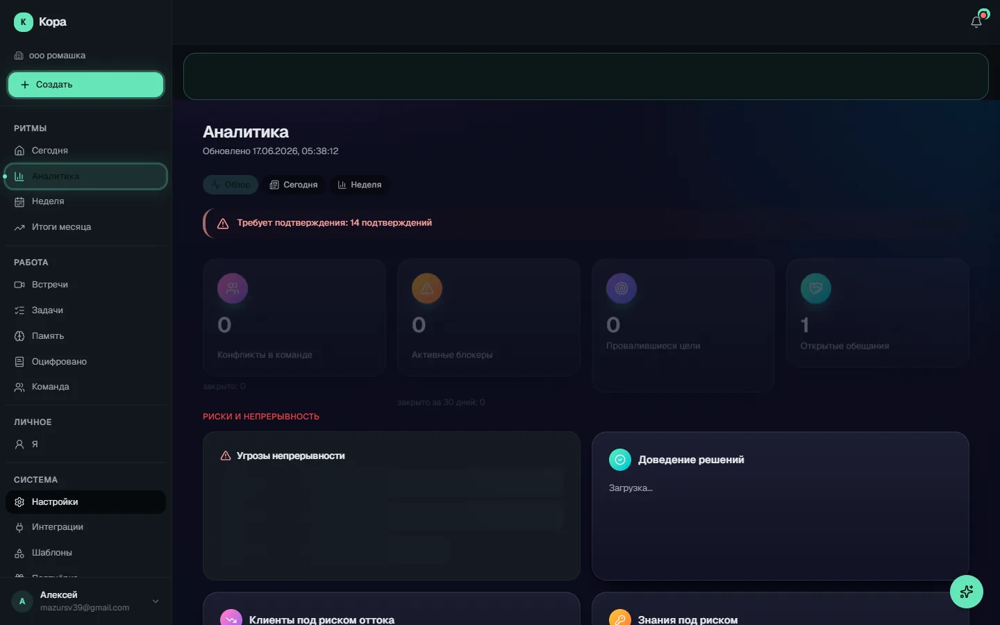
АналитикаМеню кабинета
Неделя
Понедельничный разбор: кто держит слово, пульс команды, блокеры и вектор к целям.
Владелец, администратор, операционный директор
📊
Это дашборд (сводный экран). Поячеечный разбор каждой цифры — в разделе Дашборды → Неделя.
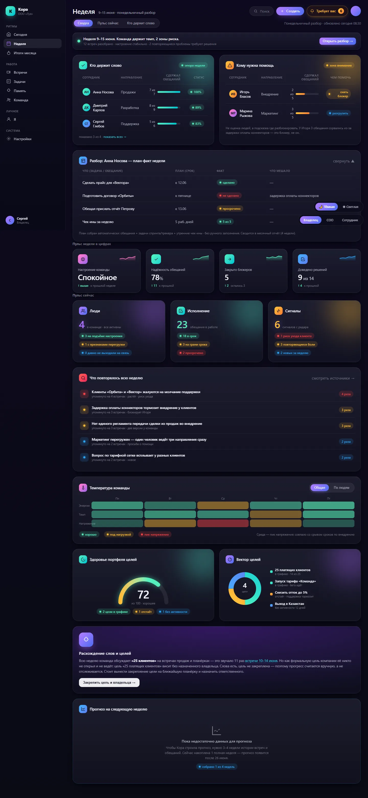
НеделяМеню кабинета
Итоги месяца
Витрина владельцу: снятая рутина, доведённые решения и сводка месяца. Можно выгрузить слайды.
Владелец, администратор
📊
Это дашборд (сводный экран). Поячеечный разбор каждой цифры — в разделе Дашборды → Итоги месяца.
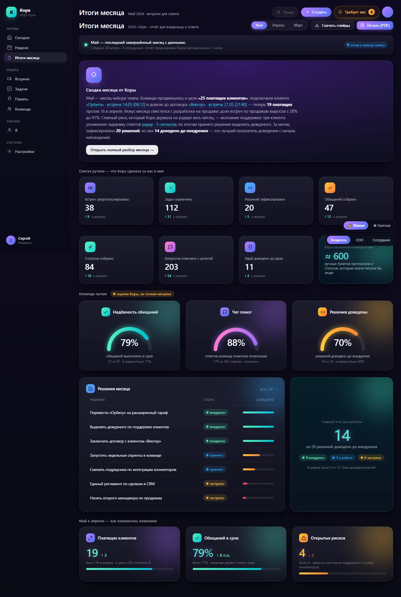
Итоги месяцаМеню кабинета
Встречи
Журнал всех встреч компании — главный список, из которого начинается работа с записями и ИИ-отчётами. Слева — список встреч с поиском и фильтрами, справа — карточка выбранной встречи с кратким содержанием, участниками и задачами (на телефоне правая панель скрыта, по тапу открывается полная страница результата). Сверху виден счётчик общего числа встреч и кнопка «Новая» с выбором: создать встречу или загрузить готовую запись. Встречи автоматически сгруппированы по времени: «Сегодня», «На неделе», «Ранее». У каждой строки виден тип встречи, длительность, дата и цветной индикатор статуса (идёт обработка, ошибка, отчёт не готов, нужно подписать говорящих). Запланированные и идущие встречи показывают кнопки «Войти» и «Скопировать ссылку» прямо в списке.
Владелец, администратор, операционный директор и рядовой сотрудник видят свои встречи и встречи, к которым им открыт доступ. Полная страница результата открывается только тем, кому встреча видна (проверяет сервер).
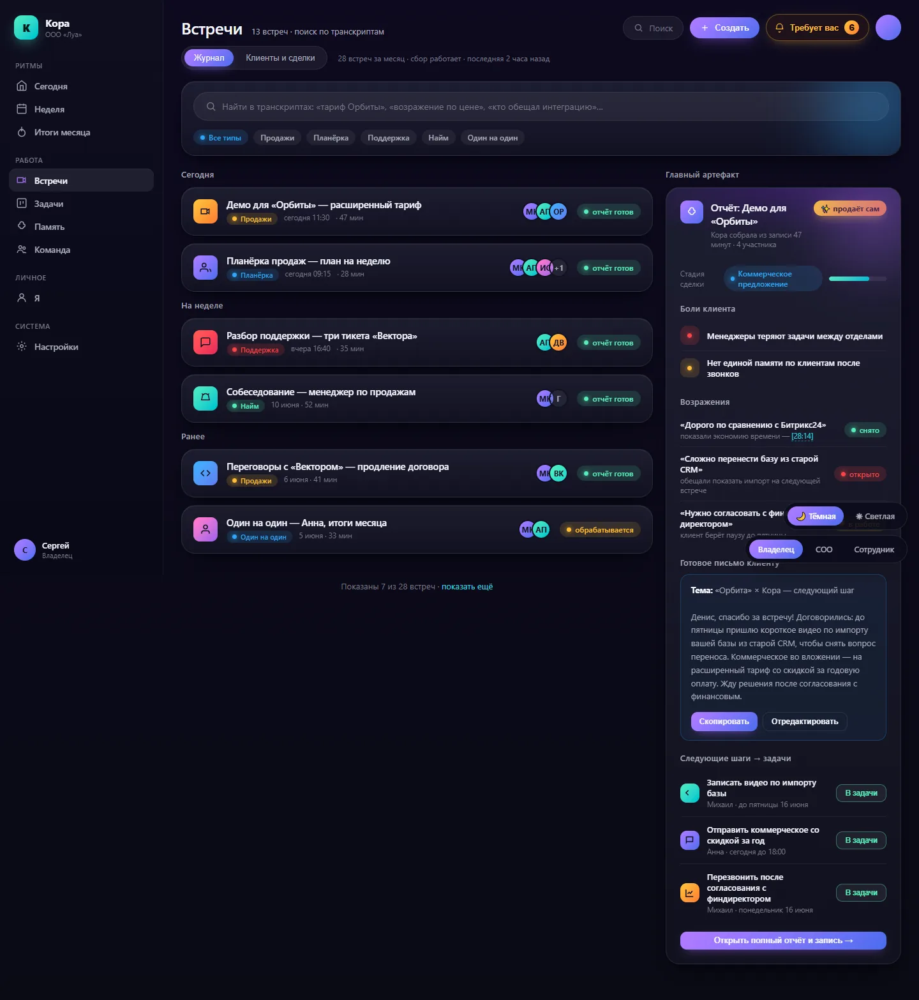
Встречи
Вкладки и разделы внутри
1
Создать встречу
Мастер создания онлайн-встречи, открывается кнопкой «Новая» → «Создать встречу». Шаг 1 — галерея шаблонов отчёта: 9 системных типов встреч плюс ваши собственные («Кастомные») шаблоны.
2
Загрузить запись
Мастер загрузки уже готовой аудио- или видеозаписи встречи, открывается кнопкой «Новая» → «Загрузить запись». Шаг 1 — выбор типа встречи (как в создании).
3
Подпись говорящих
Экран для загруженных записей: помогает сопоставить распознанные голоса с реальными людьми. Слева — панель говорящих (для каждого: доля времени и число реплик, образец речи, кнопка «Подписать» именем).
4
Результат встречи (ИИ-отчёт)
Полная страница встречи: слева плеер записи с главами и клипами, под ним вкладки с отчётом и материалами, справа — ИИ-чат по встрече (можно задавать вопросы по содержанию). Сверху — шапка с типом, длительностью, статусом, отметкой «Кому видно» и кнопками действий.
Как пользоваться
Откройте раздел «Встречи», найдите нужную встречу через поиск или фильтры (тип, статус, дата, теги) либо пролистайте группы «Сегодня/На неделе/Ранее». Кликните по встрече — справа появится карточка с кратким содержанием, участниками и задачами, оттуда можно открыть полную страницу результата. Для новой встречи нажмите «Новая» → «Создать встречу» (онлайн-встреча) или «Загрузить запись» (готовый файл). Запланированную/идущую встречу можно сразу запустить кнопкой «Войти» или раздать ссылку гостям.
Что можно сделать
Создать встречу (кнопка «Новая» → «Создать встречу»)
Загрузить готовую запись (кнопка «Новая» → «Загрузить запись»)
Искать по названию и транскрипту
Фильтровать по типу, статусу, дате и тегам
Выбрать встречу для просмотра карточки справа
Войти в запланированную/идущую встречу
Скопировать ссылку-приглашение на встречу
Подписать говорящих (для загруженных записей со статусом «Подпишите говорящих»)
Выбрать встречи галочками для массовых действий
Массово удалить выбранные встречи
Массово проставить теги выбранным встречам
Массово выгрузить ZIP-архив (транскрипт / отдельные аудиодорожки / видео)
Удалить отдельную встречу через меню «⋮»
Меню кабинета
Задачи
Раздел «Задачи» — это трекер задач компании (учёт и ведение работы команды, аналог Trello/Jira). Сама страница /projects показывает список всех проектов организации: каждая команда или направление (продажи, разработка, маркетинг) — это отдельный проект со своими задачами, статусами, ролями и участниками. Клик по проекту открывает его рабочее пространство с вкладками (Доска, Список и др.). Вся «начинка» трекера живёт ВНУТРИ конкретного проекта — на самой /projects вкладок нет, только перечень проектов и кнопка создания нового. Архивные проекты помечаются меткой «Архив».
Видно всем ролям (owner / admin / coo / manager); список ограничен проектами организации, к которым есть доступ.
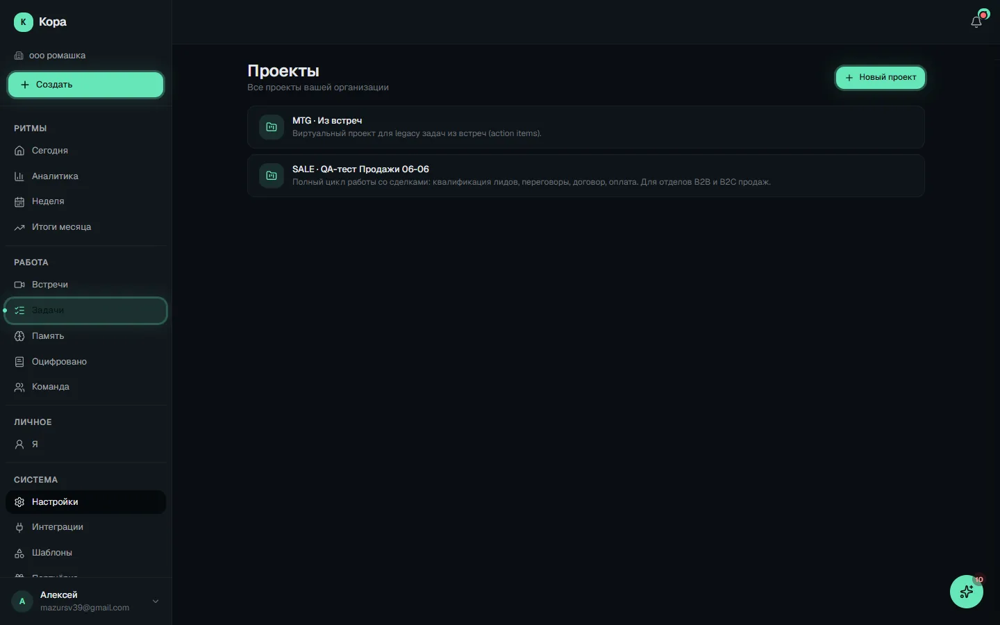
Задачи
Вкладки и разделы внутри
1
Создание проекта
Экран создания проекта. Открывается две вкладки-режима в верхней переключалке (Tabs): «Из шаблона» и «Пустой проект».
2
Обзор проекта
Главная вкладка проекта — сводка одним экраном. Собирается одним запросом и показывает: шапку проекта с участниками, строку метрик, активный спринт, распределение задач по статусам, ленту последних событий, связанные цели и недавние документы.
3
Доска (Канбан)
Канбан (доска со статусами) проекта — главный рабочий экран. Колонки соответствуют статусам проекта (если статусы не настроены — 5 виртуальных колонок по категориям).
4
Список
Список задач проекта — те же задачи, что на доске, но плоским перечнем с группировкой. Удобно, когда задач много и нужен компактный обзор без колонок.
5
Календарь
Календарь проекта — задачи и события, разложенные по датам (по срокам/дедлайнам). Помогает видеть нагрузку по дням и не пропустить сроки.
6
Спринты
Спринты (циклы — недельные/двухнедельные отрезки работы) проекта. Вкладка видна только если у проекта включён режим спринтов.
7
Входящие
Входящие — триаж (разбор) задач, которые попали в проект из внешних источников (письмо, Telegram и т.п.) и ждут решения. Вкладка видна, только если у проекта включён режим «Входящие».
8
Загруженность
Загруженность — кто чем занят в проекте. Таблица по участникам с колонками: Открыто, В работе, Просрочено (выделяется красным), Завершено за 7 дней.
9
Документы проекта
Документы проекта — встроенный текстовый редактор для брифов, ТЗ, заметок. Закреплённые (pinned) документы поднимаются вверх.
10
Приложения проекта
Приложения (интеграции) проекта — набор карточек с состоянием и кнопкой настройки. Доступны: «Импорт задач» (перенос из Bitrix24, Trello, Яндекс.Трекера), «Email-to-task» (создание задач письмом), «Telegram-уведомления проекта», «Webhooks» (уведомление другой системы о событиях проекта) и «AI-помощник проекта»…
11
Настройки проекта
Настройки проекта. Блок «Основное» показывает свойства проекта: название, slug, идентификатор задач, часовой пояс, включены ли «Спринты» и «Входящие».
12
Несколько досок
Внутри проекта может быть несколько досок (например, отдельные доски под разные потоки работы). На страницах /boards/[boardId]/* слева появляется боковая панель «Доски»: список досок проекта с цветом, числом задач и подсветкой активной, а также свёрнутый блок «Архив».
Как пользоваться
Зайдите в «Задачи» → выберите нужный проект в списке (откроется его доска). Чтобы завести новое направление работы — «Новый проект» в правом верхнем углу. Если проектов ещё нет — на пустом экране будет приглашение создать первый из шаблона команды.
Что можно сделать
Открыть проект (клик по строке → переход на Доску проекта)
Создать новый проект (кнопка «Новый проект» / «Создать проект»)
Увидеть метку «Архив» у архивированных проектов
Меню кабинета
Память
«Память» — это главный вход во всё, что Кора извлекла из встреч, чатов и разговоров. Сама страница — не таблица с данными, а хаб-навигатор: вверху строка поиска по памяти компании, ниже два больших входа («Спросить» и «Лента Коры»), а ещё ниже — плитки-ссылки на реестры (Решения, Оцифровано, Темы, Сущности, Таблицы, Идеи, Сигналы). Отсюда вы попадаете в любой раздел памяти одним кликом. Внутренних вкладок у самой страницы /memory нет — это набор карточек-ссылок плюс встроенный поиск. Данные раскладываются по отдельным маршрутам, каждый со своими фильтрами.
Все роли (owner / admin / coo / manager). Часть реестров требует прав менеджера и выше; отдельные действия (смена статуса, замена версии) — только owner / admin.
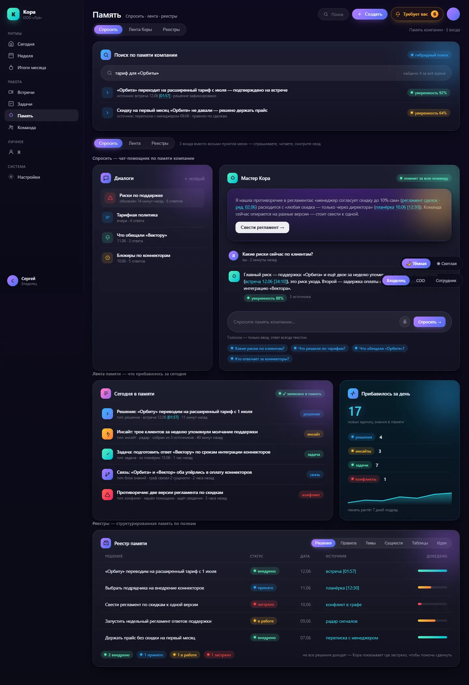
Память
Вкладки и разделы внутри
1
Поиск по памяти
Поле вверху страницы: гибридный поиск (смысловой + по словам) по всей памяти. Результат — карточки с ответом/цитатой, источником и таймкодом и чипом «уверенность N%».
2
Спросить
«Спросить» — это быстрый чат-помощник компании: вы пишете вопрос обычными словами, а Кора отвечает на основе памяти компании — встреч, документов и решений. Каждый ответ подкреплён цитатами из источников (встреча с временной меткой или ссылка на документ), чтобы было видно, откуда взялся факт.
3
Лента Коры
Живая лента-новости компании с анализом за последние ~30 дней: что прибавилось в памяти — идеи, сигналы, блокеры, решения, конфликты, активность, а также вопросы Коры и вопросы людей. Сверху — компактная сводка («за период: N сигналов, M блокеров, K идей…»).
4
Решения
Журнал ключевых решений компании, которые Кора извлекла из встреч и документов. Экран в две колонки (список слева — деталь справа).
5
Темы
Темы — это кластеры (группы) идей и обсуждений, которые Кора собрала из ваших встреч. Сетка карточек: иконка, название, ветка, динамика (растёт / стабильно / снижается), описание и счётчики «N блоков · M сущностей».
6
Сущности
Реестр сущностей графа знаний — компании, люди, проекты, продукты и темы, которые Кора выделила из встреч и разговоров. Экран master-detail: слева горизонтальные вкладки по типу + поиск + список с пагинацией «Показать ещё»; справа деталь — псевдонимы, число упоминаний, связи (исходящие и входящие) и блоки знаний по…
7
Таблицы
Smart-таблицы (умные таблицы) — база знаний команды в виде таблиц: задачи, клиенты, идеи и т.п., где строки могут быть связаны с сущностями графа. Индексная страница — сетка карточек таблиц с иконкой, названием, описанием, временем обновления и чипом привязки (Организации / Люди / Встречи / Документы).
8
Идеи
Копилка идей сотрудников и запросов клиентов, которые Кора зафиксировала из встреч и разговоров. Экран master-detail: слева список идей (с весом и числом поддержавших), справа деталь — суть, обоснование, кто поддерживает, источники и уверенность, привязанная цель, история смены статуса.
9
Сигналы
Радар сигналов — повторяющиеся проблемы, риски, блокеры и неэффективности компании, которые Кора выявила из встреч и документов. Сверху — диаграмма «Новые сигналы за N недель» (стопка по типам).
Как пользоваться
Зайдите в «Память», когда нужно что-то найти или посмотреть, что Кора уже знает. Если есть конкретный вопрос — введите его в поиск вверху или нажмите «Спросить». Если хотите быть в курсе — откройте «Ленту Коры». Если ищете конкретный тип записей (решения, регламенты, сущности и т.п.) — кликните нужную плитку реестра.
Что можно сделать
Искать по памяти одним запросом (гибридный поиск, чип уверенности, ссылка на источник с таймкодом)
Перейти в помощника «Спросить» (/chat)
Перейти в «Ленту Коры» (/feed)
Открыть любой из 7 реестров: Решения, Оцифровано, Темы, Сущности, Таблицы, Идеи, Сигналы
Меню кабинета
Оцифровано
Раздел «Оцифровано» — это библиотека внутренних правил и порядков компании, которые Кора сама собрала из встреч, обсуждений и загруженных документов. Здесь хранятся правила и стандарты, процессы, инструкции и политики (положения) — всё, что обычно живёт у людей в голове, теперь записано и доступно команде. Каждая запись показана с указанием источника (provenance — откуда взято) вплоть до дословной цитаты из встречи. Экран устроен как «список слева — карточка справа» (master-detail): выбираете запись в списке и видите её содержание, статус и историю версий. Заголовок страницы — «Правила, процессы и политики». Это первая видимая ценность: «у компании появились регламенты сами собой».
Видят все роли (owner / admin / coo / manager). Изменять записи — подтверждать актуальность, заменять новой версией, исправлять напрямую — могут только owner и admin; у остальных при попытке появится сообщение-ошибка. Кнопка «Исправить» у обычных сотрудников работает как «предложить правку» (отправляется на рассмотрение), а не как мгновенное применение.
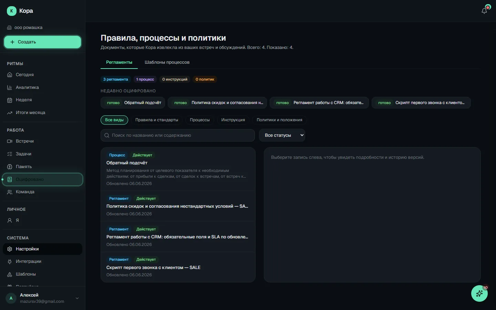
Оцифровано
Вкладки и разделы внутри
1
Регламенты (верхняя вкладка)
Основная вкладка раздела — единый список всех оцифрованных записей. Сверху чипы-счётчики (сколько регламентов, процессов, инструкций, политик и «+N за неделю»). Ниже блок «Недавно оцифровано» — топ-8 свежих записей с пометкой «готово»/«черновик». Затем фильтры по виду (пилюли: Все виды · Правила и стандарты · Процессы · Инструкция · Политики и положения), поиск по названию/содержанию и выпадающий фильтр статуса (Все статусы · Действующие · Устаревшие · В архиве). Это не отдельные вложенные страницы, а фильтры одного списка. Справа — карточка выбранной записи: статус извлечения, уверенность извлечения, аккордеон «Источники» с дословными цитатами и ссылкой на встречу, раздел «Содержание», для процессов — «Шаги процесса», для политик — уровень строгости (блокирующая/обязательная/рекомендательная), а также «Действия» и раскрываемая «История изменений».
2
Шаблоны процессов (верхняя вкладка)
Вторая вкладка раздела — каталог шаблонов бизнес-процессов, собранных процесс-детектором из встреч и документов. Внутри неё ещё два под-переключателя: «Локальные» (все шаблоны, с поиском, фильтром статуса и фильтром полноты ≥25/50/75 %, кнопкой «Создать вручную» и «Архивировать») и «Сквозные» (процессы, проходящие через несколько отделов, с трекером слабых мест между командами — friction-отчётами). У выбранного локального шаблона справа открывается панель с пятью под-вкладками: Шаги, Решения, Хэндоффы (передачи между ролями/процессами), Версии и Полнота (показатель заполненности шаблона в процентах).
Как пользоваться
Откройте раздел «Оцифровано», когда нужно быстро узнать «а как у нас принято / какой у нас порядок / какое правило по теме X». Останьтесь на вкладке «Регламенты», при необходимости отфильтруйте по виду (например, только «Политики и положения») или введите запрос в поиск, выберите запись слева и прочитайте её содержание справа. Чтобы убедиться, что Кора не выдумала правило, раскройте «Источники» и сверьтесь с дословной цитатой и встречей. Если запись устарела — owner или admin нажимает «Заменить новой версией» или «Подтвердить актуальность»; ошибочную формулировку правит через «Исправить». Для разбора рабочих процессов переключитесь на вкладку «Шаблоны процессов», в «Локальных» найдите нужный процесс и изучите его шаги/решения/передачи, а в «Сквозных» — посмотрите, где процессы между отделами буксуют (friction-отчёты).
Что можно сделать
Переключаться между верхними вкладками «Регламенты» и «Шаблоны процессов»
Фильтровать список по виду записи (пилюли: Все виды / Правила и стандарты / Процессы / Инструкция / Политики и положения)
Искать по названию или содержанию (поле с задержкой ввода 300 мс)
Фильтровать по статусу жизненного цикла (Все / Действующие / Устаревшие / В архиве)
Открыть запись из блока «Недавно оцифровано» или из списка и прочитать её содержание
Раскрыть аккордеон «Источники» и увидеть дословные цитаты с переходом на встречу-источник
Подтвердить актуальность записи (только owner / admin)
Заменить запись новой версией по идентификатору — «supersede» (только owner / admin)
Открыть/скрыть «Историю версий» записи с причинами изменений
«Исправить» поля записи (название, суть, текст, описание) — у owner/admin применяется сразу, у остальных уходит как предложение правки
Оспорить запись («Я не согласен») с указанием причины
В «Шаблонах процессов»: переключаться «Локальные» / «Сквозные», создать шаблон вручную, архивировать, фильтровать по полноте
В шаблоне процесса: смотреть под-вкладки Шаги / Решения / Хэндоффы / Версии / Полнота
В «Сквозных»: открыть friction-отчёты по слабым местам между отделами, показать закрытые, закрыть отчёт
Меню кабинета
Команда
Раздел «Команда» — это структура компании: кто в ней работает, какие есть отделы и должности. Сюда заносят сотрудников, приглашают их в систему, распределяют по отделам и должностям. Заголовок страницы — «Команда», подзаголовок: «Сотрудники, отделы и должности компании». Страница состоит из трёх вкладок (Сотрудники, Отделы, Должности) и дополнительного аналитического блока «Здоровье и пульс команды» внизу. Для рядового сотрудника (manager) раздел работает в режиме просмотра — кнопки добавления/редактирования скрыты, под заголовком пишется «Просмотр». Полное редактирование доступно только владельцу (owner) и администратору (admin).
Просмотр — все роли (рядовой сотрудник видит раздел read-only, под заголовком «Просмотр»). Редактирование (добавление, приглашения, отделы, должности, смена ролей) — только владелец (owner) и администратор (admin). Аналитический блок «Здоровье и пульс команды» виден только руководителям: владельцу, администратору и операционному директору (coo); рядовому сотруднику он не показывается (эндпоинты team-health / people-at-risk возвращают ему 403).
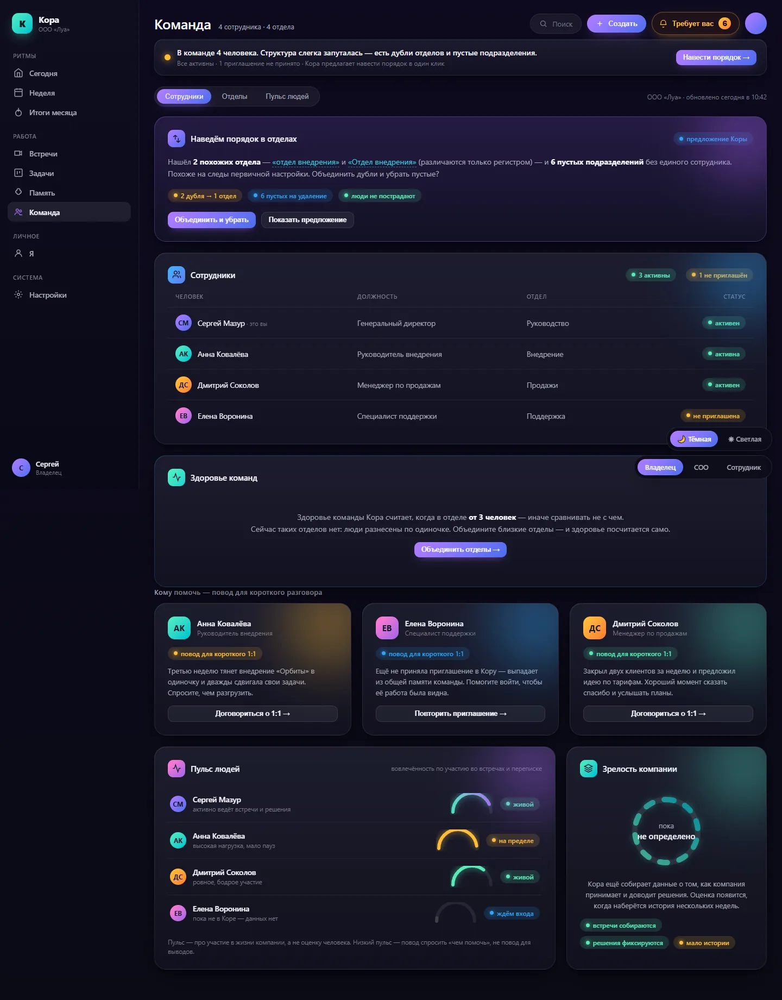
Команда
Вкладки и разделы внутри
1
Сотрудники
Открывается по умолчанию. Таблица всех людей компании (ростер): Имя, Email, Должность, Отдел, Статус приглашения, Системная роль. Вверху три фильтра — по отделу (включая «Без отдела»), по должности (включая «Без должности») и по статусу приглашения (Не приглашён / Приглашение отправлено / Активен / Отозвано / Истекло). Для владельца/админа справа кнопки «Пригласить» (создать пригласительную ссылку) и «Добавить сотрудника» (создать карточку). В каждой строке меню действий (три точки): для людей с карточкой — «Редактировать карточку», «Пригласить» / «Перевыпустить приглашение» / «Отозвать приглашение»; для людей без карточки — «Создать карточку»; для участников системы — подменю «Системная роль» (Владелец / Администратор / Менеджер), «Сбросить Telegram» и «Удалить из компании»; внизу — «Удалить карточку». По имени с карточкой можно перейти в профиль сотрудника /structure/persons/[id].
2
Отделы
Таблица отделов: Название, Глава отдела, число должностей, число сотрудников. Показывает «Всего отделов: N». Для владельца/админа есть кнопка «Добавить отдел» и в каждой строке три действия-иконки: «Назначить главу отдела» (выбрать сотрудника; глава первым получает уведомления об аномалиях в профилях знаний своих людей), «Переименовать», «Удалить». Если Кора находит дубли отделов (одинаковые названия) или пустые отделы без людей — сверху появляется карточка-предложение «Наведём порядок в отделах» с мастером: можно объединить дубли (выбрав, какой отдел оставить) и удалить пустые — сотрудники и должности при слиянии не теряются.
3
Должности
Таблица должностей: Должность, Отдел, число сотрудников, статус «Карта» (профиль должности: нет / формируется / готова / требует обновления / ошибка). Вверху фильтр по отделу. Для владельца/админа — кнопка «Добавить должность» и в строке три иконки-действия: «Загрузить должностную инструкцию» (перетащить файл PDF/DOC/DOCX/TXT/MD/RTF — он попадёт в карту должности после разбора), «Редактировать» (название и отдел) и «Удалить». По названию должности можно перейти на её карту /roles/[id].
Как пользоваться
Владелец или администратор при старте заполняет структуру: создаёт отделы (вкладка «Отделы»), затем должности (вкладка «Должности»), затем добавляет сотрудников и приглашает их в систему (вкладка «Сотрудники»). Дальше раздел используют, чтобы пригласить нового человека, поменять кому-то должность/отдел, назначить главу отдела, выдать или отозвать приглашение, изменить системную роль. Руководитель (владелец/админ/операционный директор) внизу страницы смотрит блок «Здоровье и пульс команды», чтобы понять, кому нужна помощь и держит ли команда ритм. Рядовой сотрудник видит раздел только для просмотра.
Что можно сделать
Пригласить сотрудника по ссылке («Пригласить»)
Добавить карточку сотрудника, отредактировать её, удалить
Перевыпустить или отозвать приглашение
Изменить системную роль участника (Владелец / Администратор / Менеджер)
Сбросить привязку Telegram, удалить участника из компании
Создать / переименовать / удалить отдел
Назначить или снять главу отдела
Объединить дубли отделов и убрать пустые через мастер «Наведём порядок в отделах»
Создать / отредактировать / удалить должность
Загрузить должностную инструкцию к должности
Перейти в профиль сотрудника или на карту должности
Фильтровать списки по отделу, должности и статусу приглашения
Меню кабинета
Я
Личный кабинет сотрудника «Я» — главная страница рядового сотрудника (для роли manager она открывается по умолчанию вместо /dashboard). Это один экран, собранный из пяти вкладок: профиль и карта должности, личный пульс, вклад в компанию, помощь коллегам и обещания. Здесь сотрудник видит, как Кора помнит про него и что он дал компании. Раньше это были пять отдельных страниц /me/*, теперь они сведены в один экран — старые ссылки автоматически открывают нужную вкладку через параметр ?tab=. Никаких рейтингов, штрафов и сравнений с коллегами — только мягкое признание участия. Активная вкладка хранится в адресе (?tab=overview|pulse|contributions|social|promises), поэтому ссылкой можно открыть конкретную вкладку.
Все роли (owner / admin / coo / manager). Для рядового (manager) — стартовая страница вместо дашборда. Часть данных (пульс, обещания, чек-ины) требует привязки профиля к Person в организации, иначе показывается пояснение.
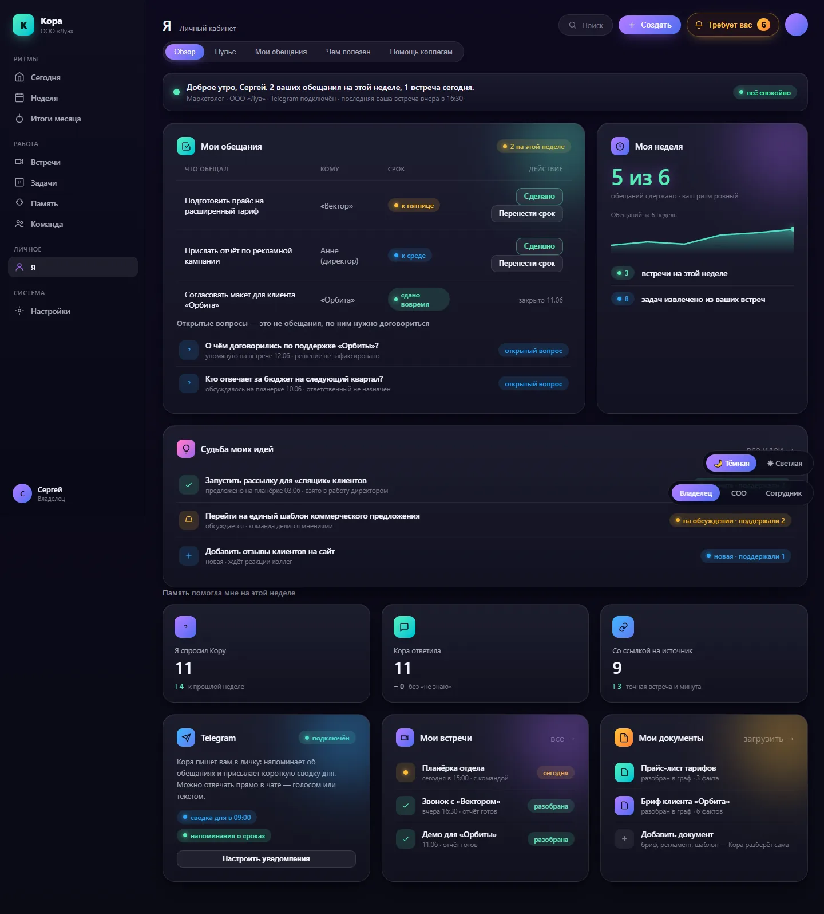
Я
Вкладки и разделы внутри
1
Обзор (overview, по умолчанию)
Шапка профиля (имя, должность-ссылка на /roles/[id], отдел), карточка «Моя должность» с возможностью её указать, «Моя карта должности» (6 категорий роли с процентом полноты, ссылка «Открыть полностью» на /roles/[id]/map), блок «Подключить Telegram» (для уведомлений), «Мои документы» (последние 5 загруженных, со статусом готово/обрабатывается/загружено/ошибка) и «Мои встречи» (последние 5, ссылка на отчёт встречи). Сверху баннер-подсказка, если не указана должность или не подключён Telegram. Секция «Моя польза за неделю» из 4 виджетов: план/факт за неделю, «Память мне помогла», «Судьба моих идей», «Входящие благодарности».
2
Пульс (pulse)
Личный пульс сотрудника (переиспользует карточку PersonPulseClient в режиме self-view). Показывает динамику и сигналы по конкретному человеку — текущему пользователю. Если профиль ещё не привязан к сотруднику компании, выводится пояснение, что пульс появится после добавления в структуру администратором.
3
Чем я полезен компании (contributions)
Мягкое признание вклада: метрики «Идеи в работе», «Идей доехало до релиза», «Спасибо за неделю» и «за всё время», секции про идеи, благодарности, стрик чек-инов, «Благодарности от Коры» (последние 5), бейджи. Внизу переключатель «Видимость для команды» — можно скрыть свои благодарности из Спотлайта и дашбордов коллег (свой профиль всё равно виден). Без рейтингов и штрафов.
4
Чем я помогаю коллегам (social)
«Мой вклад в команду» — как сотрудник помогает другим (отвечает на вопросы, подсказывает, менторит). Счётчики помощи за неделю/месяц и по 5 публичным типам за всё время, социальные роли и темы экспертизы, «Последние наблюдения» с цитатами-источниками и кнопкой «Это ошибка» (пометить наблюдение как ошибочное), панель «Приватность» с переключателем «Не показывать мой вклад публично». Честное предупреждение: руководитель видит дополнительные приватные сигналы.
5
Мои обещания (promises)
Список того, что сотрудник пообещал на встречах и в чек-инах. Фильтр «Открытые / Спросили — жду ответа / Все», таблица (на десктопе) или карточки (на мобильном) с текстом, источником-встречей, кому, сроком и статусом. Просроченные сроки подсвечены красным. Кнопки «Сделано», «Не сделано», «Перенести срок». Отдельная секция «Открытые вопросы» — блоки, которым не хватает данных до полноценного обещания (по ним нужно договориться).
Как пользоваться
Сотрудник открывает «Я», на вкладке «Обзор» дозаполняет профиль (должность, Telegram), смотрит свою карту должности и последние встречи/документы. Затем по вкладкам проверяет личный пульс, свой вклад в компанию, помощь коллегам и закрывает выполненные обещания.
Что можно сделать
Переключать 5 вкладок (Обзор / Пульс / Чем я полезен компании / Чем я помогаю коллегам / Мои обещания)
Указать свою должность (карточка «Моя должность»)
Открыть полную карту должности (/roles/[id]/map) и перейти к должности/отделу
Подключить Telegram для уведомлений
Открыть последние документы и встречи (отчёт встречи)
Скрыть/показать свои благодарности команде (вкладка «Чем я полезен компании»)
Пометить наблюдение как ошибку и включить опт-аут публичного вклада (вкладка «Чем я помогаю коллегам»)
«Мой инбокс» — единый список всех задач, где текущий сотрудник назначен исполнителем, по всем проектам текущей организации. Это персональная очередь дел рядового: что на нём «висит» прямо сейчас. Список обновляется в реальном времени — при изменениях задач трекера (создание, правка, сортировка intake) он сам подтягивает свежие данные. Внутренних вкладок у страницы нет — это один сгруппированный список задач. Внизу есть постраничная подгрузка: кнопка «Загрузить ещё», а когда дошли до конца — надпись «Это всё».
Любой сотрудник, у которого есть назначенные на него задачи (в первую очередь рядовой manager); привязка к организации обязательна.
Как пользоваться
Сотрудник заходит в «Мои дела», чтобы увидеть всё, что на нём числится в работе, открывает нужную задачу, при большом списке жмёт «Загрузить ещё».
Что можно сделать
Просмотреть все свои задачи (где вы исполнитель), сгруппированные списком
Список автоматически обновляется при изменениях в трекере (live)
Меню кабинета · для сотрудника
Чек-ин
«Мои чек-ины» — личная страница коротких ежедневных отчётов сотрудника: утренний (план на день) и вечерний (что сделано), плюс блокеры. Здесь сотрудник вручную добавляет чек-ин и видит свою историю за последние 30 дней. Записанный чек-ин попадает в память компании. У каждого чек-ина показан значок источника: 🌅 — ответ на утренний/вечерний прампт от Коры, ✋ — сам написал в Telegram-бот, 🖊 — создан вручную через веб-кабинет; чек-ины, требующие проверки куратором, помечаются отдельно. Внутренних вкладок нет — страница из двух секций: форма «Новый чек-ин» и «История за 30 дней».
Рядовой сотрудник (и любой пользователь с персональной записью Person в организации). Без привязки Person backend вернёт «нет персональной записи — чек-ины недоступны».
Как пользоваться
Утром сотрудник открывает «Чек-ин», выбирает «Утренний», вписывает планы и сохраняет; вечером выбирает «Вечерний» и отмечает сделанное. Голосом удобно надиктовать с телефона. История за 30 дней показывает прошлые отчёты и их источник.
Что можно сделать
Выбрать тип чек-ина: «Утренний (план)» или «Вечерний (что сделано)»
Ввести пункты текстом (одна строка = один пункт) или надиктовать голосом (кнопка голосового ввода → расшифровка)
Сохранить чек-ин («✓ Записано в память компании»)
Просмотреть историю чек-инов за последние 30 дней с типом, датой и значком источника
Видеть пометку «требует проверки» у чек-инов на ревью куратора
Меню кабинета · для сотрудника
Спросить
«Спросить» — это быстрый чат-помощник компании: вы пишете вопрос обычными словами, а Кора отвечает на основе памяти компании — встреч, документов и решений. Каждый ответ подкреплён цитатами из источников (встреча с временной меткой или ссылка на документ), чтобы было видно, откуда взялся факт. Это не поиск по ключевым словам, а диалог: можно уточнять и задавать вопросы по цепочке. Голос работает только на ВВОД (можно надиктовать вопрос через микрофон), ответ всегда приходит текстом — озвучки нет. Помимо общего помощника, при наличии в компании клонов должностей вопрос можно адресовать конкретному клону (например, «Клону маркетолога»). Внешний вид страницы зависит от устройства: на компьютере — список диалогов слева и переписка справа, на телефоне — один экран с быстрыми подсказками.
Рядовой сотрудник (роль manager). Пункт меню «Спросить» виден только рядовому; у владельца и админа в десктоп-меню он скрыт (они задают вопросы через раздел «Память» и плавающую панель «Помощник компании»). Доступ закрыт тарифным гейтом feature.chat_org — если у компании нет этой функции, страница недоступна.
Вкладки и разделы внутри
1
Фильтр диалогов: Активные / Архив (только на компьютере)
Переключатель над списком диалогов слева. «Активные» — текущие переписки, «Архив» — убранные в архив. Это два состояния одного списка, а не разные разделы. Если диалогов нет, показывается подсказка «Пока нет диалогов. Задайте первый вопрос справа».
2
Выбор адресата: Кора · помощник компании / Клоны должностей
Селектор у поля ввода. По умолчанию выбран общий помощник Коры. Если в компании есть клоны должностей и вам выдан доступ — можно выбрать клон, и вопрос уйдёт именно ему (ответ помечается значком и именем клона). Клоны без доступа показаны серыми с пометкой «нет доступа». Если ролевых клонов в компании нет — селектор не показывается, остаётся только помощник.
3
Дополнительно → «На момент» (только помощник, только на компьютере)
Скрытая по умолчанию настройка под полем ввода (раскрывается ссылкой «Дополнительно»). Позволяет задать дату и время, на которое смотрит ответ — Кора отвечает так, как было на тот момент (временной срез памяти). Кнопка «сбросить» убирает фильтр. Для клонов эта настройка недоступна.
Как пользоваться
Рядовой сотрудник открывает «Спросить», когда нужно быстро что-то выяснить по компании, не отвлекая коллег: «О чём договорились с клиентом в прошлый раз?», «Как у нас принято оформлять отпуск?», «Что решили по проекту Z?». Пишет вопрос (или диктует голосом на телефоне), читает ответ и при сомнении проверяет источники по ссылкам под ответом. Если ответ помог — ставит лайк, это помогает Коре учиться. При необходимости адресует вопрос клону конкретной должности.
Что можно сделать
Написать вопрос в поле и отправить (кнопка отправки или Enter)
Надиктовать вопрос голосом через микрофон (только на телефоне; распознанный текст подставляется в поле, отправляете сами)
На телефоне — нажать готовую подсказку (для рядового: «Как у нас оформляют…», «Что решили по…», «Спросить клон должности»), дописать конкретику и отправить
Открыть источник под ответом: перейти на встречу (с временной меткой) или на документ-первоисточник
Оценить ответ помощника лайком 👍 или дизлайком 👎 (повторный клик снимает оценку)
Создать новый диалог кнопкой «Новый» и переключаться между диалогами в списке (на компьютере)
Закрепить важный диалог вверху списка или отправить диалог в архив (на компьютере)
Выбрать адресата вопроса — общий помощник или клон должности; при отказе в доступе нажать «Запросить доступ»
Задать вопрос «на момент времени» через раздел «Дополнительно» (временной срез памяти)
Меню кабинета
Настройки
Личные настройки пользователя и его кабинета. Страница построена на табах (вкладках), активная вкладка зашита в адрес через параметр ?tab= (например /settings?tab=security), поэтому ссылку на конкретную вкладку можно отправить коллеге. Слева есть боковое меню настроек, которое помимо этих вкладок ведёт на отдельные страницы-разделы: Организация, Теги, Интеграции, Уведомления, Экспорты, а для владельца компании ещё и блок «Владелец компании» с пунктами «Подписка и оплата» и «Тариф и лимиты». Сама страница /settings показывает четыре вкладки: Профиль, Безопасность, Внешний вид, Онбординг. Здесь меняют своё имя, пароль, тему интерфейса и заново запускают обучающие туры.
Все роли (owner / admin / coo / manager). Вкладки Профиль, Безопасность, Внешний вид, Онбординг видны всем. В боковом меню блок «Владелец компании» (Подписка и оплата, Тариф и лимиты) виден только владельцу (owner).
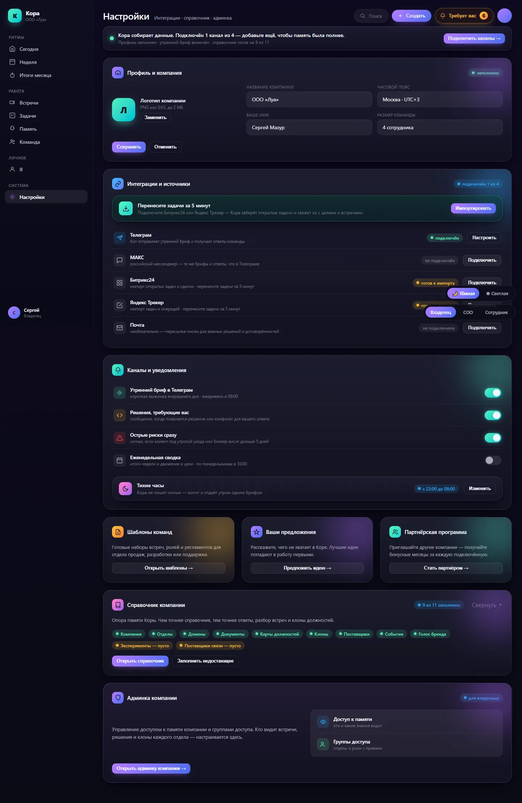
Настройки
Вкладки и разделы внутри
1
Профиль
Изменение своего имени (видно вам и участникам встреч) и сохранение. Email показан, но недоступен для редактирования — это логин. Здесь же кнопка «Показать знакомство снова», которая перезапускает приветственный тур на главной.
2
Безопасность
Смена пароля: текущий пароль, новый и подтверждение. Есть проверка надёжности пароля и совпадения. После сохранения все прочие ваши сессии завершаются, текущая остаётся активной.
3
Внешний вид
Выбор темы интерфейса: Тёмная, Светлая или Системная (следует за настройкой устройства). Выбор сохраняется локально на этом устройстве.
4
Онбординг
Перезапуск обучающих туров: «Обзор кабинета» (17 подсказок по разделам сайдбара), «Настройка компании» (6 шагов — отделы, должности, команда, спринты) и кнопка «Сбросить» весь прогресс туров.
Как пользоваться
Зашли в «Настройки», чтобы поправить своё имя, сменить пароль, переключить тёмную/светлую тему или заново пройти обучающие подсказки. Для настроек уровня компании (организация, теги, интеграции, уведомления, экспорты, подписка) переходите по пунктам бокового меню слева — это уже отдельные страницы.
Что можно сделать
Вкладка «Профиль»: изменить своё имя и сохранить (email показан, но менять нельзя — это логин)
Вкладка «Профиль»: кнопка «Показать знакомство снова» — заново включает приветственный тур по кабинету
Вкладка «Безопасность»: сменить пароль (текущий + новый + подтверждение); после смены все остальные сессии завершаются, текущая остаётся
Вкладка «Внешний вид»: выбрать тему интерфейса — Тёмная / Светлая / Системная (выбор сохраняется на этом устройстве)
Вкладка «Онбординг»: запустить тур «Обзор кабинета» (17 подсказок), тур «Настройка компании» (6 шагов), либо «Сбросить все туры»
Перейти из бокового меню в отдельные разделы: Организация, Теги, Интеграции, Уведомления, Экспорты (и для владельца — Подписка и оплата, Тариф и лимиты)
Меню кабинета
Интеграции
Раздел «Интеграции» — это список направлений доставки (куда Кора отправляет задачи и уведомления из встреч наружу). Вкладок внутри страницы нет: содержимое сгруппировано по типам направлений в виде секций-списков. Поддерживаются четыре типа: Почта (письмо на адрес), Slack (входящий вебхук — адрес для отправки в Slack), Telegram (бот: токен бота + идентификатор чата) и Произвольный вебхук (любой HTTPS-адрес, куда слать данные). Над списком отдельной карточкой стоит «Импорт данных» — это вход в мастер переноса задач из других трекеров (Trello, Битрикс24, Яндекс Трекер). Важно: личная привязка вашего личного Telegram-бота сюда больше не относится — она переехала на страницу «Каналы» (/me/channels); здесь настраиваются именно общие направления доставки уровня компании.
Доступно из бокового меню настроек всем пользователям с доступом к настройкам (owner / admin / coo и т.д.). Это направления доставки уровня компании, а не личные каналы пользователя.
Вкладки и разделы внутри
1
Импорт данных (карточка-вход)
Не вкладка, а отдельная карточка над списком: вход в мастер импорта задач из других трекеров (Trello, Битрикс24, Яндекс Трекер) — перенос проектов, задач, комментариев и вложений за 4 шага.
2
Секция «Почта»
Список направлений типа e-mail: отправка письма с задачами/уведомлениями на указанный адрес.
3
Секция «Slack»
Список направлений типа Slack: доставка через входящий вебхук Slack (сохранённый адрес вебхука).
4
Секция «Telegram»
Список направлений типа Telegram-бот: доставка через бота по токену и идентификатору чата (показывается chat_id и отметка, что токен сохранён).
5
Секция «Произвольный вебхук»
Список направлений типа generic webhook: отправка данных на любой указанный HTTPS-адрес.
Как пользоваться
Откройте «Интеграции», чтобы настроить, куда уходят задачи и уведомления из встреч: добавьте Почту, Slack, Telegram-бота или произвольный вебхук. Нажмите «Добавить», выберите тип, заполните поля и сохраните. Кнопкой «Тест» проверьте, что сообщение реально доходит. Чтобы перенести задачи из другого трекера — нажмите карточку «Импорт задач из других трекеров» вверху и пройдите мастер из 4 шагов.
Что можно сделать
«Добавить» — создать новое направление: выбрать тип (Почта / Slack / Telegram / Произвольный вебхук), задать название и заполнить поля (адрес почты; адрес вебхука Slack; токен бота + идентификатор чата для Telegram; HTTPS-адрес для произвольного вебхука)
«Тест» рядом с направлением — отправить пробное сообщение и убедиться, что доставка работает
Кнопка-карандаш — редактировать направление (название и параметры; секреты, такие как токен/URL, скрыты — поле оставляют пустым, если менять не нужно)
Кнопка-корзина — удалить направление (с подтверждением)
Карточка «Импорт задач из других трекеров» — открыть мастер переноса проектов, задач, комментариев и вложений из Trello, Битрикс24 или Яндекс Трекера (ведёт на /integrations/import-tracker)
Меню кабинета
Шаблоны
Раздел «Шаблоны» — каталог готовых наборов для типовых команд (статусы задач, роли, метрики). Идея в том, чтобы не настраивать трекер с нуля, а взять заготовку под свой тип команды (продажи, разработка, маркетинг и т.д.). Сейчас каталог работает в режиме просмотра (read-only — только чтение): можно открыть карточку шаблона и посмотреть его структуру. Создание реального проекта из шаблона пока не подключено — кнопки нет, появится позже (в коде помечено как Sprint 9). Если системные шаблоны ещё не загружены, раздел покажет пустую заглушку «Системные шаблоны команд появятся в Sprint 9».
Виден всем ролям (владелец, админ, операционный директор, рядовой) — пункт меню «Шаблоны» в разделе «Системы»
Как пользоваться
Зайдите в «Шаблоны», просмотрите плитки заготовок, откройте подходящую по категории. На странице шаблона изучите блок «Структура», чтобы понять, какие статусы и роли он принесёт. Применить шаблон к проекту в один клик пока нельзя — функция в разработке.
Что можно сделать
Открыть карточку шаблона (клик по плитке) и перейти на страницу шаблона /team-templates/[slug]
На странице шаблона — прочитать его описание и блок «Структура» (готовый набор статусов/ролей/метрик)
Меню кабинета
Партнёрка
Раздел «Партнёрка» — личный кабинет участника партнёрской программы Коры. Здесь вы получаете свою партнёрскую ссылку, делитесь ей и зарабатываете 20 000 ₽ в месяц с каждого приведённого активного клиента (платёж повторяется ежемесячно, пока клиент пользуется Корой). Экран один, без вкладок, но он сам перестраивается под три ситуации: (А) профиля ещё нет — видна только реклама программы и кнопка «Создать ссылку»; (Б) ссылка есть, но переходов пока ноль — показываются нулевые плитки, ссылка с QR-кодом и реквизиты; (В) пошли клики и оплаты — добавляются воронка, график дохода за 12 месяцев и таблица приведённых клиентов. Названия и реквизиты клиентов скрыты (маскировка) — видны только анонимный код, даты и суммы.
Виден всем ролям — ссылку можно создать без ИНН. У руководителей (владелец/админ/операционный директор) шкала-гейдж называется «Окупаемость подписки», у рядового сотрудника — «Активных клиентов»; остальное одинаково
Как пользоваться
При первом входе нажмите «Создать ссылку» (поставив галочку оферты), скопируйте её или покажите QR и начните делиться. Когда появятся переходы и оплаты, отслеживайте плитки дохода, воронку и таблицу клиентов. Чтобы получать выплаты, заранее заполните реквизиты и подтвердите ИНН — деньги уходят автоматически 10-го числа.
Что можно сделать
Создать партнёрскую ссылку в один клик (нужно поставить галочку согласия с офертой партнёрской программы)
Скопировать партнёрскую ссылку кнопкой «Копировать» или показать QR-код для шеринга на телефон
Посмотреть верхнюю полосу из 4 плиток: «Активных клиентов», «Доход в этом месяце», «Всего заработано», «К выводу»
Заполнить и сохранить реквизиты для вывода: ИНН, форма деятельности (самозанятый / ИП / юрлицо), название банка, номер счёта
Запустить проверку ИНН кнопкой «Проверить ИНН»
Нажать «Вывести» — откроется окно-пояснение «Когда придут деньги» (выплаты автоматически 10-го числа; досрочно — через поддержку)
Переключать период воронки (30 дней / 90 дней / всё время)
Смотреть график дохода за 12 месяцев и таблицу приведённых клиентов (с маскировкой названий) — в активном состоянии
Раздел «Ваши предложения» — прямой канал к команде Коры (в коде — «команда Z»). Здесь можно написать, чего не хватает в продукте, что мешает, а что нравится. Все обращения раз в сутки автоматически собираются в смысловые блоки (AI-кластеризация) и помогают команде расставлять приоритеты в развитии продукта. Экран простой, без вкладок: сверху форма отправки, под ней — история ваших обращений. Действует лимит — 5 сообщений в сутки на пользователя; над формой всегда видно, сколько отправлено и когда счётчик обнулится.
Виден всем ролям (владелец, админ, операционный директор, рядовой) — пункт меню «Ваши предложения» в разделе «Системы»
Как пользоваться
Опишите своими словами идею, проблему или похвалу и нажмите «Отправить» — появится подтверждение «Спасибо, передали команде». Помните про лимит 5 сообщений в сутки. Отправленное сразу попадает в «Историю обращений» ниже со статусом «получено»; команда видит агрегированные блоки и учитывает их при планировании.
Что можно сделать
Написать обращение в поле (до 5000 символов, есть счётчик символов) и нажать «Отправить»
Видеть плашку лимита: «Сегодня вы отправили N из 5 сообщений. Осталось …» и время обнуления счётчика
Просматривать «Историю обращений» — таблица с колонками «Дата», «Текст», «Статус» (сейчас единственный статус — «получено»)
Разворачивать/сворачивать длинный текст обращения кнопкой «развернуть»/«свернуть»
Листать историю постранично (по 20 записей) кнопками «Назад» / «Вперёд»
Меню кабинета
Справочник
Свёрнутый по умолчанию аккордеон — «карточки компании», на которые Кора опирается при разборе встреч и построении графа. Заполняется один раз и редко меняется. Ниже — каждый пункт.
Видят все; редактируют обычно владелец/админ
Вкладки и разделы внутри
1
Компания
Карточка идентичности компании: краткое имя, миссия (зачем компания существует), видение (картина будущего через 3–5 лет), стратегия (как туда прийти) и стадия развития (ранняя стадия / рост / масштабирование / крупная компания). Это одностраничный редактор из текстовых полей без вкладок.
2
Отделы
Двухпанельный экран (мастер-деталь): слева — список отделов компании, справа — детали выбранного отдела и его функциональная нагрузка. Главная задача страницы — связывать отделы с функциональными доменами (Department ↔ FunctionalDomain): видно, какие домены закреплены за отделом, их роль и процент покрытия.
3
Домены
Дерево функциональных доменов компании (Маркетинг, Продажи, Финансы и т.д.) с вложенными под-доменами. Эта ось (FUNCTIONAL) используется в графе знаний и в оценке зрелости.
4
Зрелость
Сводный дашборд зрелости компании в современном визуальном стиле (стеклянные карточки). Показывает агрегатный процент зрелости компании, среднюю зрелость должностей и отделов (с долей оценённых), гистограмму распределения должностей по уровню зрелости и общую статистику по доменам и покрытию отделов.
5
Документы
Список загруженных файлов компании и статус их разбора (загружен / обрабатывается / готов / ошибка). Кора разбирает документы в граф знаний и может подсказывать атрибуцию — тип документа и тему — баннером прямо в строке («Кора предлагает…», действия «Принять» / «Изменить»).
6
Должности
Витрина карт должностей: сетка карточек, каждая ведёт на страницу должности /roles/:id. На карточке — название, отдел, число носителей роли и статус карты (карта готова / формируется / требует обновления / ошибка / карты ещё нет).
7
Клоны
Публичный маркетплейс клонов должностей: клон отвечает в стиле должности, опираясь на накопленные обсуждения подходов к решениям, и сохраняет опыт даже когда носитель роли меняется. Карточки сгруппированы по отделам в сворачиваемые секции; сверху — закреплённое поле поиска по названию должности.
8
Поставщики
Простой список поставщиков (контрагентов) организации: название, сегмент (ПО / Оборудование / Консалтинг / Логистика / Другое), ИНН и статус (Активный / В оценке / Расстались / В чёрном списке). Сверху — счётчик «Всего» и «Показано», а также поле поиска по названию или ИНН.
9
События
Лента значимых событий организации: встречи, инциденты, релизы, переходы, вехи и прочее. По каждому событию видны заголовок, тип, дата и время начала, место и длительность в минутах.
10
Эксперименты
Институциональная память компании: что попробовали, что вышло и чему научились. Экран в формате мастер-деталь — слева список экспериментов с поиском и фильтром по статусу, справа детальная карточка выбранного эксперимента (гипотеза, текущий результат, уроки, даты, число блоков-источников, кнопки смены статуса).
11
Голос бренда
Профиль голоса бренда компании: тон (10 осей с прогресс-барами), ценности (с весами), табу-фразы (с альтернативами и причинами) и список артефактов — документов, помеченных «корпус бренда» (brand_corpus). Сверху показаны полнота профиля и версия, а также статус: размер корпуса, дата последней сборки и версия…
Меню кабинета
Админка компании
Отдельный раздел управления настройками всей организации, доступный только владельцу (owner) и администратору (admin). Это не личные «Настройки» сотрудника, а рычаги уровня компании: кто из сотрудников что видит в «Памяти компании», как отделы видят знания друг друга, какие внешние каналы поставляют данные в граф знаний и как считается оценка качества встреч. Раздел вынесен в собственный левый сайдбар (боковое меню) «Админка компании» с четырьмя пунктами и не смешивается с личными «Настройками». При входе по адресу /company-admin система сразу открывает первую вкладку «Доступ к памяти». Для остальных ролей (coo, manager) сайдбар скрыт, а сами страницы показывают сообщение, что раздел доступен только администраторам. Биллинга/тарифа в этом разделе НЕТ — оплата и подписка живут в другом месте кабинета.
Только владелец и администратор
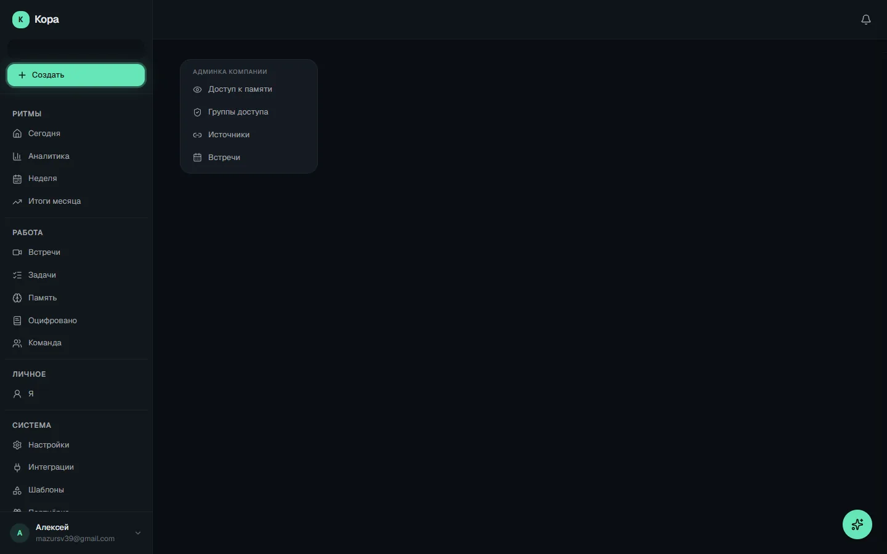
Админка компании
Вкладки и разделы внутри
1
Доступ к памяти (/company-admin/memory-access)
Управление тем, какие разделы «Памяти компании» видят рядовые сотрудники (роль member). Два переключателя-карточки: «Правила и стандарты» (регламенты, процессы, политики — по умолчанию только менеджеры и выше) и «Сущности» (клиенты, проекты, продукты и связи). Для каждого выбирается одно из двух: «Менеджеры и выше» или «Все участники»; под карточкой подписано «Кто видит». Раздел «Идеи» показан отдельной справочной карточкой — он всегда открыт всем и закрыть его нельзя (менять статус идей всё равно могут только менеджеры). Изменения сохраняются сразу с уведомлением «Настройки сохранены».
2
Группы доступа (/company-admin/access-groups)
Управление видимостью знаний внутри компании, две секции. (1) «Матрица видимости отделов» — для каждого отдела раскрывающийся блок с галочками, где отмечают, знания каких ДРУГИХ отделов он может видеть; связь направленная и несимметричная (продажи видят логистику ≠ логистика видит продажи), свой отдел доступен всегда; есть кнопка «Сохранить» и подсказка «Есть несохранённые изменения». Если отделов нет — подсказка создать их в разделе «Структура». (2) «Участники групп» — раскрывающийся список закрытых групп («Руководство», «Совет») и отделов с числом участников; внутри видно, кто добавлен «из должности», а кто «добавлен вручную», можно добавить человека поиском по имени или убрать крестиком. По умолчанию знание видно всей компании — группы и матрица лишь сужают доступ.
3
Источники (/company-admin/sources)
Подключение внешних каналов, события из которых попадают в общий граф знаний. Список подключённых источников с типом, классом данных, временем последнего события и (если есть) Webhook URL (адрес для приёма событий) с кнопкой копирования. По каждому источнику: переключатель «Активен», кнопка «Тест» (проверка связи), «Настроить» (редактирование) и значок отключения. Кнопка «Подключить источник» открывает выбор из 4 типов: «Telegram-бот» (сообщения чатов через Bot API), «Телефония (Mango)» (события и записи звонков), «Электронная почта (IMAP)» (чтение входящих писем, есть кнопка «Проверить подключение») и «Дамп мысли (web-form)» (быстрые заметки со страницы /dump). У каждого источника задаётся «Класс данных»: Публичные / Внутренние / Чувствительные / Личные (чувствительные и личные не уходят во внешние LLM). Секреты (токены, пароли) хранятся в зашифрованном виде.
4
Встречи (/company-admin/meetings)
Настройка оценки качества встреч на уровне всей организации. Один блок «Считать оценку для типов встреч» — список из 9 типов с галочками: Командная встреча (team), Стендап (standup), План-факт (plan_fact), Проект (project), Продажи (sales), Custdev, Партнёр (partner), Интервью (interview), Customer Success. Галочка стоит = для этого типа оценка качества считается; снять галочку = для типа оценку не считать (например, кастдев — это исследование, а не управленческая встреча). Кнопка «Сохранить» применяет настройку, после успеха появляется «Настройки сохранены».
Как пользоваться
Владелец или администратор заходит в «Админку компании» при настройке организации: задаёт, какие разделы памяти открыты рядовым сотрудникам, настраивает видимость знаний между отделами и состав закрытых групп, подключает внешние источники данных (Telegram, телефония, почта, быстрые заметки) и выбирает, для каких типов встреч считать оценку качества. Это разовая или редкая настройка «под компанию», а не ежедневная работа.
Что можно сделать
Переключаться между 4 вкладками в левом меню: Доступ к памяти, Группы доступа, Источники, Встречи
Открыть/закрыть разделы памяти для рядовых сотрудников
Настроить, какие отделы видят знания друг друга, и состав закрытых групп
Подключить и настроить внешние источники данных
Выбрать типы встреч, для которых считается оценка качества
Описание дашбордов
Как читать дашборды
Дашборд (сводный экран) — «приборная панель» компании. Все цифры считаются автоматически из встреч, чатов, задач, обещаний и чек-инов — вручную ничего вносить не нужно.
Два типа содержимого
Точные цифры из базы — посчитаны по данным.Текст от ИИ — связное объяснение от нейросети (интерпретация).Смешанное — цифра + ИИ.
В карточках ниже у каждой ячейки помечено цветом, что это: данные, ИИ или смешанное.
Общие приёмы
Дельта (↑ 4 / ↓ 2 / = 0) — изменение к прошлому периоду.
Спарклайн (мини-график) — динамика за последние дни.
Шкала (gauge) и пончик (donut) — доля от целого в %.
Светофор: зелёный — норма, жёлтый — внимание, красный — риск.
Ссылка на источник (например «встреча 12.06 [01:57]») ведёт к моменту во встрече.
«Молчит, когда норма» — баннеры-тревоги появляются только при проблеме.
🕒
Ежедневная сводка собирается ночью, недельная — к утру понедельника, часть показателей пересчитывается при открытии экрана.
Описание дашбордов
Сегодня (главная)
Главный экран руководителя. Сверху вниз: вердикт дня → что было вчера и что требует вас → польза за период → вектор движения и сводка ИИ → самое острое → оцифровано → активность команды → вопросы и чек-ины.
Владелец, администратор
Реальный экран «Сегодня» в кабинете (демо-Org).
Что означает каждая ячейка
Строка-вердикт дняданные
Что показываетОдна фраза: «Компания в норме. N вещей требуют решения» (или «Сбор данных не работает»). Кнопка «Разобрать» ведёт в очередь.
Как считаетсяN = число элементов в очереди «Требует вас». Красный режим — если сбор данных сломан.
Откуда берётсяОчередь решений + индикатор сбора
Что было вчераИИ
Что показываетСвязный пересказ вчерашнего дня + чип «доставлено в Telegram».
Как считаетсяТекст пишет нейросеть (короткая выжимка дневной сводки).
Откуда берётсяИИ-текст дневного отчёта
Требует васданные
Что показываетКрупное число + разбивка: конфликты, карточки знания, вопросы Коры.
Как считаетсяСумма открытых пунктов очереди решений по типам.
Откуда берётсяОчередь решений (см. «Требует вас»)
Польза за период (5 счётчиков)данные
Что показываетВстречи запротоколированы · Задачи извлечены · Решения зафиксированы · Вопросов отвечено памятью · Договорённостей удержано. Переключатель Неделя/Месяц.
Как считаетсяПодсчёт сущностей за 7 (или 30) дней. Каждый счётчик — ссылка на источник.
Откуда берётсяВстречи, задачи, решения, обращения к памяти, обещания
Вектор движения (компас)смешанное
Что показываетКуда движется компания: «к цели / дрейф / против». Вкладки: Вся компания · По целям · По спринту недели. Разбивка по отделам.
Как считаетсяСравнение реальных обсуждений и активности с формулировками целей.
Откуда берётсяАнализ против целей компании
Сводка Коры за неделюИИ
Что показываетИИ-абзац с главными расхождениями и рисками + пронумерованные источники [1][2].
Как считаетсяНейросеть формирует нарратив по графу знаний (кэш до суток).
Откуда берётсяИИ-текст по данным памяти
Самое острое — радар сигналовданные
Что показываетТоп острых сигналов (риск ухода клиента, боль продукта). Когда чисто — «острых сигналов нет — это хорошо».
Как считаетсяСигналы ранжируются по остроте и свежести.
Откуда берётсяСигналы (/insights) + радар рисков
Оцифрованоданные
Что показывает«N регламентов · M процессов · K инструкций» — сколько правил Кора уже собрала.
Как считаетсяСчётчики раздела «Оцифровано».
Откуда берётсяРаздел /regulations
Активность команды + Лента дняданные
Что показываетПоследние действия (задачи, решения, встречи) и сворачиваемая «Лента дня».
Как считаетсяХронология событий.
Откуда берётсяСобытия по задачам/решениям/встречам
Вопросы Коры · Чек-ины сегодняданные
Что показываетПлашки: сколько вопросов Коры без ответа и кто сдал чек-ины.
Как считаетсяОткрытые вопросы + отметки чек-ина за день.
Откуда берётсяОчередь вопросов + чек-ины
⚠️
Цифры кэшируются до минуты, текст сводки — до суток. Если у компании пусто — показывается экран-пример с прогрессом настройки. Рядовой сотрудник на эту страницу не попадает — у него «Я».
Описание дашбордов
Аналитика
Доска операционного разбора. Сверху — KPI-ряд (пульс одной строкой), ниже тематические секции по приоритету: «Риски и непрерывность» → «Аналитика пульса» → «Загрузка» → «Трения», затем оперативка дня и внизу детальные списки. Большинство тяжёлых блоков считают фоновые агенты по расписанию (часто по понедельникам и каждое утро), поэтому «нет данных» в первую неделю — это нормально.
Владелец, администратор, операционный директор (рядовой сотрудник — нет доступа)
Верх доски «Аналитика»: KPI-ряд из 4 счётчиков и начало секции «Риски и непрерывность» (реальный кабинет).
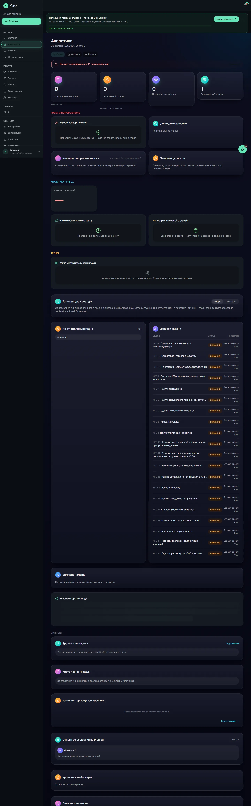
Вся доска «Аналитика» целиком (демо-Org: много нулей, но видна реальная структура секций).
Что означает каждая ячейка
Баннер «Необратимые решения без альтернатив»данные
Что показываетТревога сверху: приняли трудно-обратимое решение без рассмотренных альтернатив. Сам прячется, когда таких нет.
Как считаетсяАгент «пульс» помечает решения с высокой необратимостью и без альтернатив.
Откуда берётсяЖурнал решений (пульс)
KPI · Конфликты в командеданные
Что показываетСколько сейчас активных конфликтов между людьми (+ «закрыто за 30 дней», мини-график притока).
Как считаетсяЧисло связей «конфликт» в графе. Цвет: зелёный 0 · жёлтый 1–3 · красный >3.
Откуда берётсяГраф (связи «конфликт»)
KPI · Активные блокерыданные
Что показываетСколько сейчас мешает работе (+ «закрыто за 30 дней»). Клик ведёт в недельную сводку.
Как считаетсяЧисло активных блокеров. Цвет: зелёный 0 · жёлтый 1–5 · красный >5.
Откуда берётсяСинтез блокеров из встреч/чек-инов
KPI · Провалившиеся целиданные
Что показываетСколько целей не достигнуто в срок.
Как считаетсяАгрегат целей по статусу. Цвет: зелёный 0 · жёлтый 1–2 · красный >2.
Откуда берётсяЦели
KPI · Открытые обещанияданные
Что показываетСколько договорённостей висит открытыми за 14 дней. Клик ведёт в недельную сводку.
Как считаетсяЧисло открытых обещаний. Цвет: зелёный ≤5 · жёлтый 6–15 · красный >15.
Откуда берётсяОбещания
Операционная нагрузка (график за 12 недель)данные
Что показываетДве линии: приток блокеров (янтарная) и конфликтов (розовая) по неделям. Скрыт, если данных нет.
Как считаетсяБлокеры и конфликты по дате появления, 12 точек старые→новые.
Откуда берётсяБлокеры + связи «конфликт»
Доведение решенийданные
Что показывает«N% доведено за 90 дней» + прогресс-бар, ниже «застряло без движения» со списком решений.
Как считаетсяДоля решений с зафиксированным результатом. Цвет: ≥80% зелёный · 40–79% жёлтый · <40% красный. Застрявшее = решение старше 21 дня без задач и результата.
Откуда берётсяРешения + связанные задачи
Клиенты под риском оттокасмешанное
Что показываетКлиенты с тревожными сигналами: уровень (критично/внимание), преобладающий сигнал, динамика «приток/спад риска», ответственный менеджер.
Как считаетсяБалл риска = взвешенная сумма сигналов за 14 дней (риск ухода×5, возражение×3, боль×2, запрос доработки×1). Критично ≥10, внимание ≥4. Считает дневной агент.
Откуда берётсяРадар рисков клиентов
Знания под рискомсмешанное
Что показываетЗоны, что держатся на одном человеке, и он под риском ухода («фактор автобуса × уход носителя»).
Как считаетсяМатрица: критичность зоны (на одном эксперте) × риск ухода человека. Обновляется по понедельникам.
Откуда берётсяГраф знаний + риск-флаги людей
Незаменимость (bus-factor)смешанное
Что показываетНа ком завязаны критичные зоны компании.
Как считаетсяИз агента «пульс».
Откуда берётсяПульс компании
Аналитика пульсасмешанное
Что показывает«Скорость знаний» (как быстро пополняется граф), «Что мы обсуждаем по кругу» (повторяющиеся темы — сигнал нерешённого), «Встречи с низкой отдачей» (много времени — мало решений/задач).
Как считаетсяИз агента «пульс» за неделю.
Откуда берётсяПульс по встречам и графу
Загрузка командданные
Что показываетПо отделам: число людей, средняя загрузка и статус (перегруз/недогруз/норма) + «перегружено N · недогружено M».
Как считаетсяЗагрузка = сумма % активных назначений человека; по отделу — среднее. Перегруз >120%, недогруз <50%.
Откуда берётсяНазначения на людей
Перегруз ответственностьюданные
Что показывает«Накопители» — кто держит много чужих обещаний при малой отдаче: «на нём N · раздаёт M».
Как считаетсяИз недельного снимка сети обещаний: роль «накопитель», входящие/исходящие обещания.
Откуда берётсяСеть обещаний (по понедельникам)
Узкие места / тепловая карта тренийсмешанное
Что показываетГде затыки в потоке работы и трения между командами.
Как считаетсяИз агента «пульс» (bottlenecks).
Откуда берётсяПульс
Температура командыданные
Что показываетПереключатель «Общая / По людям»: пончик настроений (зелёный/жёлтый/красный) + дельта красных к прошлой неделе; по людям — тепловая карта.
Как считаетсяЧек-ины за 7 дней с разобранным настроением.
Откуда берётсяЧек-ины
Не отчитались сегодняданные
Что показываетКто ещё не сделал чек-ин за сегодня («N из M»).
Как считаетсяСотрудники без чек-ина за дату (по МСК).
Откуда берётсяЧек-ины
Зависли задачиданные
Что показываетПросроченные/застрявшие задачи трекера: «просрочено N дн.» / «без активности N дн.».
Как считаетсяЗадача без обновления >5 дней ИЛИ срок прошёл без завершения. Просрочка → красный, зависание → жёлтый.
Откуда берётсяТрекер задач
Сигналы · Зрелость компанииданные
Что показываетКольцо с % зрелости, стадия компании и зрелость по доменам.
Что показываетПончик распределения сигналов недели по первопричинам (процессный пробел, коммуникация, приоритеты, роль/навык, инструменты…).
Как считаетсяСигналы за 7 дней средней/высокой важности, сгруппированные по категории причины.
Откуда берётсяСигналы (insights)
Топ-5 повторяющихся проблемданные
Что показываетЧто всплывает снова и снова.
Как считаетсяПовторяющиеся сигналы/блокеры.
Откуда берётсяСигналы/блокеры
Открытые обещания за 14 дней (детально)данные
Что показываетОткрытые обещания, сгруппированные по автору, с плашками «спросили» / «давно молчит».
Как считаетсяТе же открытые обещания, что и в KPI, группировка по автору.
Откуда берётсяОбещания
Хронические блокерыданные
Что показываетБлокеры, что живут давно или повторяются: статус (новый/повторяется/закрыт), «N дн. открыт», причина (ссылка на сигнал).
Как считаетсяКластеры блокеров, сортировка по «бизнес-удару» (клиент/дедлайн/обещание усиливают вес).
Откуда берётсяСинтез блокеров
Свежие конфликтыданные
Что показываетПоследние конфликты между людьми: ИмяА ↔ ИмяБ, % уверенности и объяснение.
Как считаетсяТоп-5 свежих связей «конфликт».
Откуда берётсяГраф
Вопросы Коры командеданные
Что показываетЛента уточняющих вопросов, которые Кора задаёт команде (probe).
Как считаетсяАктивность типа «вопрос» в масштабе компании.
Откуда берётсяЛента активности
⚠️
Доступ только у руководителей; рядовой сотрудник получает «Нет доступа». На телефоне вместо этой доски открывается мобильная «Команда». Тяжёлые виджеты считают фоновые агенты (по понедельникам / по утрам) — поэтому пустые состояния в первую неделю нормальны.
Описание дашбордов
Ежедневный отчёт
Дневная сводка операционного директора — «что было за вчера» за 30 секунд утром. Собирается автоматически каждый день в 01:00 МСК и рассылается в Telegram/почту. Адрес: /dashboard/operations/daily. Сверху — выбор даты и кнопка «Перегенерировать» (владелец/админ).
Владелец, администратор, операционный директор
Что означает каждая ячейка
Короткая выжимкаИИ
Что показывает3–4 предложения-итог дня (тот же текст уходит в Telegram).
Как считаетсяПишет нейросеть; при сбое — «сухой» шаблон по цифрам.
Откуда берётсяИИ-текст
Динамика по днямданные
Что показываетДва мини-графика: настроение и нагрузка по дням.
Как считаетсяБерутся снимки прошлых дневных сводок (до 14 дней).
Откуда берётсяСохранённые отчёты
Срочное · Что произошло · Кто выделился · Кому нужна поддержкаданные
Что показываетСписки событий и людей за сутки.
Как считаетсяПересчитываются при каждом открытии (всегда свежие).
Откуда берётсяВстречи/решения/обещания/чек-ины
Клиенты под риском · Хронические блокерысмешанное
Что показываетКлиенты с растущими сигналами и постоянные блокеры.
Как считаетсяБалл риска и повторяющиеся блокеры.
Откуда берётсяРадар рисков + блокеры
Температура команды (пончик)данные
Что показываетДоли зелёных/жёлтых/красных настроений.
Как считаетсяСнимок метрик на момент генерации.
Откуда берётсяЧек-ины
Главное за день (6 счётчиков)данные
Что показываетКрупные числа дня.
Как считаетсяТочные подсчёты за день.
Откуда берётсяБаза данных
Полный отчётИИ
Что показываетРазвёрнутый текст целиком + «сгенерировано / доставлено».
Как считаетсяПишет нейросеть.
Откуда берётсяИИ-текст
⚠️
Базовые счётчики и пончик — снимок на момент ночной генерации, а срочные/просроченные секции пересчитываются при открытии. По краю суток цифры могут чуть расходиться — так задумано.
Описание дашбордов
Недельная сводка
Итоги недели с изменением к прошлой и разбивкой по людям. Адрес: /dashboard/operations/weekly.
Владелец, администратор, операционный директор
Что означает каждая ячейка
Итоги недели (текст)ИИ
Что показываетСвязный обзор недели.
Как считаетсяПишет нейросеть по агрегатам недели.
Откуда берётсяИИ-текст
Дельты по секциямданные
Что показываетКак изменился каждый показатель к прошлой неделе (↑/↓).
Как считаетсяРазница «эта неделя − прошлая».
Откуда берётсяНедельные срезы
Разбивка по людям (план-факт)данные
Что показываетПо каждому: что обещал/планировал и что сделал.
Как считаетсяСводятся обещания + задачи + чек-ины.
Откуда берётсяОбещания/задачи/чек-ины
⚠️
Тот же план-факт по людям сводится в «Итоги месяца» (4 недели). Заполнять вручную ничего не нужно.
Описание дашбордов
Неделя
Понедельничный разбор. Вкладки «Сводка / Пульс сейчас / Кто держит слово».
Владелец, администратор, операционный директор
Экран «Неделя» (демо-данные).
Что означает каждая ячейка
Вердикт неделиданные
Что показываетФраза-итог + зоны риска.
Как считаетсяСводный статус недели.
Откуда берётсяАгрегаты недели
Кто держит словоданные
Что показываетТаблица надёжных: «сдержал обещаний» (7 из 7 = 100%).
Как считаетсяДоля выполненных обещаний.
Откуда берётсяОбещания и их исполнение
Кому нужна помощьданные
Что показываетУ кого срываются обещания и почему (часто блокер, не человек).
Как считаетсяНизкая доля + причина срыва.
Откуда берётсяОбещания + блокеры
Разбор: план-факт по человекуданные
Что показываетРаскрываемая строка: задачи/обещания, план, факт, что мешало.
Как считаетсяСводятся обещания + задачи + чек-ины.
Откуда берётсяАвто, без ручного ввода
Пульс недели в цифрахданные
Что показывает4 показателя со спарклайнами: настроение, надёжность обещаний %, закрыто блокеров, доведено решений.
Как считаетсяТочные агрегаты + сравнение с прошлой.
Откуда берётсяЧек-ины/обещания/блокеры/решения
Пульс сейчас (3 зоны)данные
Что показываетЛюди / Исполнение / Риски — моментальный срез.
Как считаетсяТекущее состояние.
Откуда берётсяТекущие данные команды
Дисциплина чек-инов · Зависшие вопросыданные
Что показываетКто в ритме и какие вопросы давно без ответа.
Как считаетсяДоля чек-инов + старые вопросы.
Откуда берётсяЧек-ины + очередь вопросов
Описание дашбордов
Итоги месяца
Витрина владельцу: что компания сделала за месяц. Можно выгрузить как слайды.
Владелец, администратор
Экран «Итоги месяца» (демо-данные).
Что означает каждая ячейка
Сводка месяца (текст)ИИ
Что показываетСвязный итог месяца со ссылками на встречи.
Как считаетсяПишет нейросеть.
Откуда берётсяИИ-текст
Счётчики за месяцданные
Что показываетВстреч, задач, решений, ответов из памяти.
Как считаетсяТочные подсчёты за месяц.
Откуда берётсяБаза данных
Шкалыданные
Что показываетНадёжность обещаний %, активность чата %, доведение решений %.
Как считаетсяДоли за месяц.
Откуда берётсяОбещания/обращения/решения
Решения месяцаданные
Что показываетКлючевые решения со статусом «доведено / застряло».
Как считаетсяСостояние реализации по каждому.
Откуда берётсяЖурнал решений + задачи
Открытые риски · Слайдыданные
Что показываетСколько рисков и кнопка экспорта в презентацию.
Как считаетсяСчётчик рисков; экспорт из показателей.
Откуда берётсяРадар рисков
⚠️
Технически «Итоги месяца» и «Ценность» (value-recap) — один экран.
Описание дашбордов
Я (личный)
Личное пространство сотрудника. Подробно — в разделе меню «Я» (5 вкладок). Здесь — про «цифры»: мои обещания, моя неделя, судьба идей, чем помогла память.
Экран «Я» (демо-данные).
Что означает каждая ячейка
Моя польза за неделю (4 виджета)данные
Что показываетПлан/факт недели · «Память мне помогла» · «Судьба моих идей» · «Входящие благодарности».
Как считаетсяПодсчёт по личным данным.
Откуда берётсяЗадачи/обещания/идеи/память
Мои обещанияданные
Что показываетЧто обещал, кому, к сроку, статус (сделано/просрочено).
Как считаетсяСписок обещаний и исполнение.
Откуда берётсяОбещания из встреч/чатов
Моя карта должностиданные
Что показывает6 категорий роли с % полноты.
Как считаетсяПолнота карты должности.
Откуда берётсяКарта должности
Описание дашбордов
Требует вас
Единая очередь решений — только то, что требует человека. Рутину Кора закрывает сама.
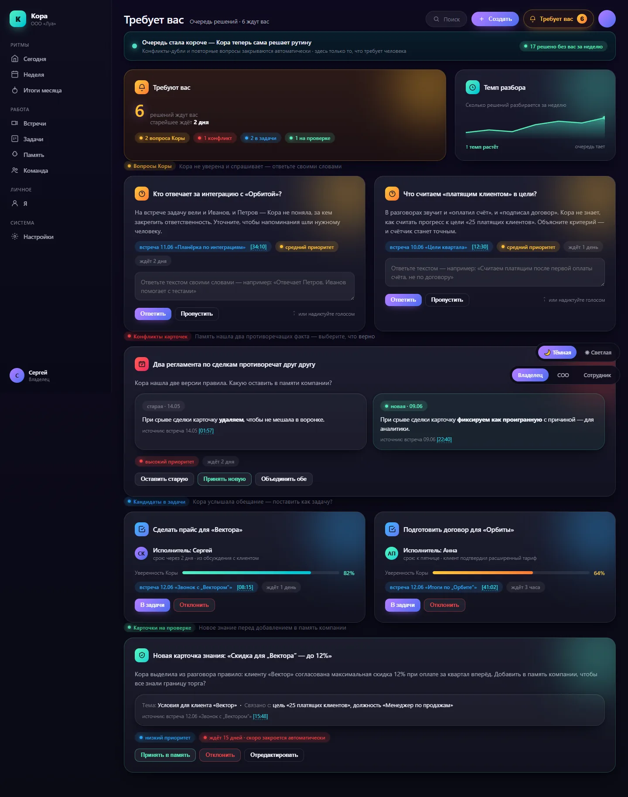
Очередь решений (демо-данные).
Что означает каждая ячейка
Вопросы Корыданные
Что показываетКора не уверена и спрашивает. Ответ — текстом или голосом, без кнопок-вариантов.
Как считаетсяВопросы по неоднозначностям из встреч.
Откуда берётсяСформулированные системой вопросы
Конфликты карточекданные
Что показываетПамять нашла два противоречащих факта. Выбрать: старую / новую / объединить.
Как считаетсяПротиворечия в графе.
Откуда берётсяГраф знаний
Кандидаты в задачисмешанное
Что показываетКора услышала обещание; показана «уверенность Коры» %. «В задачи» / «Отклонить».
Как считаетсяОбещания + оценка уверенности ИИ.
Откуда берётсяОбещания из встреч
Карточки на проверкеданные
Что показываетНовое знание перед добавлением в память. Через ~15 дней закрывается само.